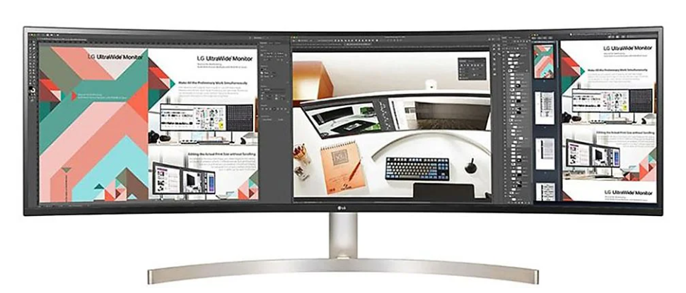

Snapdragon 8 gen 2 confirmado
Confirmado el nuevo procesador de gama alta del fabricante de procesadores para moviles Qualcom. Lo podremos ver a partir de la segunda mitad de 2023 en los modelos más top.

Confirmado el nuevo procesador de gama alta del fabricante de procesadores para moviles Qualcom. Lo podremos ver a partir de la segunda mitad de 2023 en los modelos más top.
Entre otras de sus mejoras y características observamos un aumento de FPS en el juego, lo que ofrece una experiencia más fluida del mismo.
No todos los tipos de raton son adecuados para todos los usuarios. Informate de cual es el que más te conviene gracias a este artículo.

Descubre las ventajas y desventajas de un monitor ultrawide o quedate con las clásica configuración de dos pantallas.
